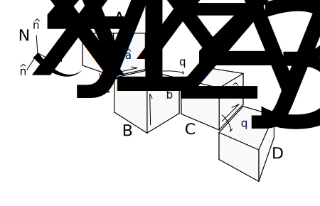
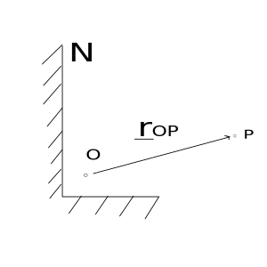

Vector: Kinematics
Contents
Vector: Kinematics¶
This document will give some mathematical background
to describing a system’s kinematics as well as how to represent the kinematics
in sympy.physics.vector.
Introduction to Kinematics¶
The first topic is rigid motion kinematics. A rigid body is an idealized representation of a physical object which has mass and rotational inertia. Rigid bodies are obviously not flexible. We can break down rigid body motion into translational motion, and rotational motion (when dealing with particles, we only have translational motion). Rotational motion can further be broken down into simple rotations and general rotations.
Translation of a rigid body is defined as a motion where the orientation of the body does not change during the motion; or during the motion any line segment would be parallel to itself at the start of the motion.
Simple rotations are rotations in which the orientation of the body may change, but there is always one line which remains parallel to itself at the start of the motion.
General rotations are rotations which there is not always one line parallel to itself at the start of the motion.
Angular Velocity¶
The angular velocity of a rigid body refers to the rate of change of its orientation. The angular velocity of a body is written down as: \(^{\mathbf{N}}\mathbf{\omega}^{\mathbf{B}}\), or the angular velocity of \(\mathbf{B}\) in \(\mathbf{N}\), which is a vector. Note that here, the term rigid body was used, but reference frames can also have angular velocities. Further discussion of the distinction between a rigid body and a reference frame will occur later when describing the code representation.
Angular velocity is defined as being positive in the direction which causes the orientation angles to increase (for simple rotations, or series of simple rotations).

The angular velocity vector represents the time derivative of the orientation. As a time derivative vector quantity, like those covered in the Vector & ReferenceFrame documentation, this quantity (angular velocity) needs to be defined in a reference frame. That is what the \(\mathbf{N}\) is in the above definition of angular velocity; the frame in which the angular velocity is defined in.
The angular velocity of \(\mathbf{B}\) in \(\mathbf{N}\) can also be defined by:
It is also common for a body’s angular velocity to be written as:
There are a few additional important points relating to angular velocity. The first is the addition theorem for angular velocities, a way of relating the angular velocities of multiple bodies and frames. The theorem follows:
This is also shown in the following example:
{kind=link}
Note the signs used in the angular velocity definitions, which are related to how the displacement angle is defined in this case.
This theorem makes defining angular velocities of multibody systems much easier, as the angular velocity of a body in a chain needs to only be defined to the previous body in order to be fully defined (and the first body needs to be defined in the desired reference frame). The following figure shows an example of when using this theorem can make things easier.
{kind=link}
Here we can easily write the angular velocity of the body \(\mathbf{D}\) in the reference frame of the first body \(\mathbf{A}\):
It is very important to remember to only use this with angular velocities; you cannot use this theorem with the velocities of points.
There is another theorem commonly used: the derivative theorem. It provides an alternative method (which can be easier) to calculate the time derivative of a vector in a reference frame:
The vector \(\mathbf{v}\) can be any vector quantity: a position vector, a velocity vector, angular velocity vector, etc. Instead of taking the time derivative of the vector in \(\mathbf{N}\), we take it in \(\mathbf{B}\), where \(\mathbf{B}\) can be any reference frame or body, usually one in which it is easy to take the derivative on \(\mathbf{v}\) in (\(\mathbf{v}\) is usually composed only of the basis vector set belonging to \(\mathbf{B}\)). Then we add the cross product of the angular velocity of our newer frame, \(^{\mathbf{N}}\mathbf{\omega}^{\mathbf{B}}\) and our vector quantity \(\mathbf{v}\). Again, you can choose any alternative frame for this. Examples follow:
Angular Acceleration¶
Angular acceleration refers to the time rate of change of the angular velocity vector. Just as the angular velocity vector is for a body and is specified in a frame, the angular acceleration vector is for a body and is specified in a frame: \(^{\mathbf{N}}\mathbf{\alpha}^{\mathbf{B}}\), or the angular acceleration of \(\mathbf{B}\) in \(\mathbf{N}\), which is a vector.
Calculating the angular acceleration is relatively straight forward:
Note that this can be calculated with the derivative theorem, and when the angular velocity is defined in a body fixed frame, becomes quite simple:
Again, this is only for the case in which the angular velocity of the body is defined in body fixed components.
Point Velocity & Acceleration¶
Consider a point, \(P\): we can define some characteristics of the point. First, we can define a position vector from some other point to \(P\). Second, we can define the velocity vector of \(P\) in a reference frame of our choice. Third, we can define the acceleration vector of \(P\) in a reference frame of our choice.
These three quantities are read as:
Note that the position vector does not have a frame associated with it; this is because there is no time derivative involved, unlike the velocity and acceleration vectors.
We can find these quantities for a simple example easily:
{kind=link}
It is critical to understand in the above example that the point \(O\) is fixed in the reference frame \(\mathbf{N}\). There is no addition theorem for translational velocities; alternatives will be discussed later though. Also note that the position of every point might not always need to be defined to form the dynamic equations of motion. When you don’t want to define the position vector of a point, you can start by just defining the velocity vector. For the above example:
There will often be cases when the velocity of a point is desired and a related point’s velocity is known. For the cases in which we have two points fixed on a rigid body, we use the 2-Point Theorem:
{kind=link}
Let’s say we know the velocity of the point \(S\) and the angular velocity of the body \(\mathbf{B}\), both defined in the reference frame \(\mathbf{N}\). We can calculate the velocity and acceleration of the point \(P\) in \(\mathbf{N}\) as follows:
When only one of the two points is fixed on a body, the 1 point theorem is used instead.
{kind=link}
Here, the velocity of point \(S\) is known in the frame \(\mathbf{N}\), the angular velocity of \(\mathbf{B}\) is known in \(\mathbf{N}\), and the velocity of the point \(P\) is known in the frame associated with body \(\mathbf{B}\). We can then write the velocity and acceleration of \(P\) in \(\mathbf{N}\) as:
Examples of applications of the 1 point and 2 point theorem follow.
{kind=link}
This example has a disc translating and rotating in a plane. We can easily define the angular velocity of the body \(\mathbf{B}\) and velocity of the point \(O\):
and accelerations can be written as:
We can use the 2 point theorem to calculate the velocity and acceleration of point \(P\) now.
{kind=link}
In this example we have a double pendulum. We can use the two point theorem twice here in order to find the velocity of points \(Q\) and \(P\); point \(O\)’s velocity is zero in \(\mathbf{N}\).
{kind=link}
In this example we have a particle moving on a ring; the ring is supported by a rod which can rotate about the \(\mathbf{\hat{n}_x}\) axis. First we use the two point theorem to find the velocity of the center point of the ring, \(Q\), then use the 1 point theorem to find the velocity of the particle on the ring.
A final topic in the description of velocities of points is that of rolling, or rather, rolling without slip. Two bodies are said to be rolling without slip if and only if the point of contact on each body has the same velocity in another frame. See the following figure:

This is commonly used to form the velocity of a point on one object rolling on another fixed object, such as in the following example:
Kinematics in physics.vector¶
It should be clear by now that the topic of kinematics here has been mostly
describing the correct way to manipulate vectors into representing the
velocities of points. Within sympy.physics.vector there are convenient methods for
storing these velocities associated with frames and points. We’ll now revisit
the above examples and show how to represent them in sympy.
The topic of reference frame creation has already been covered. When a
ReferenceFrame is created though, it automatically calculates the angular
velocity of the frame using the time derivative of the DCM and the angular
velocity definition.
>>> from sympy import Symbol, sin, cos
>>> from sympy.physics.vector import *
>>> init_vprinting(pretty_print=False)
>>> N = ReferenceFrame('N')
>>> q1 = dynamicsymbols('q1')
>>> A = N.orientnew('A', 'Axis', [q1, N.x])
>>> A.ang_vel_in(N)
q1'*N.x
Note that the angular velocity can be defined in an alternate way:
>>> B = ReferenceFrame('B')
>>> u1 = dynamicsymbols('u1')
>>> B.set_ang_vel(N, u1 * B.y)
>>> B.ang_vel_in(N)
u1*B.y
>>> N.ang_vel_in(B)
- u1*B.y
Both upon frame creation during orientnew and when calling set_ang_vel,
the angular velocity is set in both frames involved, as seen above.
Here we have multiple bodies with angular velocities defined relative to each other. This is coded as:
>>> N = ReferenceFrame('N')
>>> A = ReferenceFrame('A')
>>> B = ReferenceFrame('B')
>>> C = ReferenceFrame('C')
>>> D = ReferenceFrame('D')
>>> u1, u2, u3 = dynamicsymbols('u1 u2 u3')
>>> A.set_ang_vel(N, 0)
>>> B.set_ang_vel(A, u1 * A.x)
>>> C.set_ang_vel(B, -u2 * B.z)
>>> D.set_ang_vel(C, u3 * C.y)
>>> D.ang_vel_in(N)
u1*A.x - u2*B.z + u3*C.y
In sympy.physics.vector the shortest path between two frames is used when finding
the angular velocity. That would mean if we went back and set:
>>> D.set_ang_vel(N, 0)
>>> D.ang_vel_in(N)
0
The path that was just defined is what is used. This can cause problems though, as now the angular velocity definitions are inconsistent. It is recommended that you avoid doing this.
Points are a translational analog to the rotational ReferenceFrame.
Creating a Point can be done in two ways, like ReferenceFrame:
>>> O = Point('O')
>>> P = O.locatenew('P', 3 * N.x + N.y)
>>> P.pos_from(O)
3*N.x + N.y
>>> Q = Point('Q')
>>> Q.set_pos(P, N.z)
>>> Q.pos_from(P)
N.z
>>> Q.pos_from(O)
3*N.x + N.y + N.z
Similar to ReferenceFrame, the position vector between two points is found
by the shortest path (number of intermediate points) between them. Unlike
rotational motion, there is no addition theorem for the velocity of points. In
order to have the velocity of a Point in a ReferenceFrame, you have to
set the value.
>>> O = Point('O')
>>> O.set_vel(N, u1*N.x)
>>> O.vel(N)
u1*N.x
For both translational and rotational accelerations, the value is computed by taking the time derivative of the appropriate velocity, unless the user sets it otherwise.
>>> O.acc(N)
u1'*N.x
>>> O.set_acc(N, u2*u1*N.y)
>>> O.acc(N)
u1*u2*N.y
Next is a description of the 2 point and 1 point theorems, as used in
sympy.
First is the translating, rotating disc.
>>> N = ReferenceFrame('N')
>>> u1, u2, u3 = dynamicsymbols('u1 u2 u3')
>>> R = Symbol('R')
>>> B = ReferenceFrame('B')
>>> O = Point('O')
>>> O.set_vel(N, u1 * N.x + u2 * N.y)
>>> P = O.locatenew('P', R * B.x)
>>> B.set_ang_vel(N, u3 * B.z)
>>> P.v2pt_theory(O, N, B)
u1*N.x + u2*N.y + R*u3*B.y
>>> P.a2pt_theory(O, N, B)
u1'*N.x + u2'*N.y - R*u3**2*B.x + R*u3'*B.y
We will also cover implementation of the 1 point theorem.
This is the particle moving on a ring, again.
>>> N = ReferenceFrame('N')
>>> u1, u2 = dynamicsymbols('u1 u2')
>>> q1, q2 = dynamicsymbols('q1 q2')
>>> l = Symbol('l')
>>> R = Symbol('R')
>>> C = N.orientnew('C', 'Axis', [q1, N.x])
>>> C.set_ang_vel(N, u1 * N.x)
>>> O = Point('O')
>>> O.set_vel(N, 0)
>>> Q = O.locatenew('Q', -l * C.z)
>>> P = Q.locatenew('P', R * (cos(q2) * C.x + sin(q2) * C.y))
>>> P.set_vel(C, R * u2 * (-sin(q2) * C.x + cos(q2) * C.y))
>>> Q.v2pt_theory(O, N, C)
l*u1*C.y
>>> P.v1pt_theory(Q, N, C)
- R*u2*sin(q2)*C.x + (R*u2*cos(q2) + l*u1)*C.y + R*u1*sin(q2)*C.z